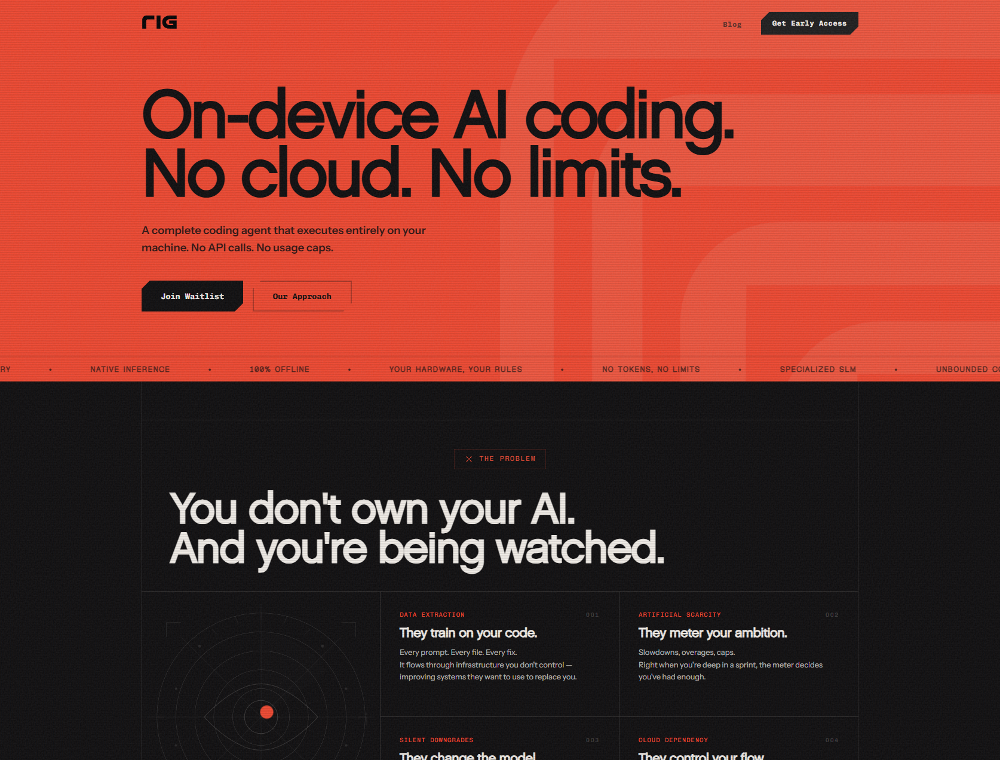

Rig
- Лендинг
- Сервисы и приложения
- Инструменты разработчика
- Разработчикам
- Продуктовым командам
- Утилитарный техно
- Брутализм
- Тёмная тема
- Нейтральный фон
- Скроллителлинг
- Микроанимации
- Анимация типографики
- Astro
- Английский язык
- Действующий сайт

Что это
Сайт Rig — локального ИИ-ассистента для кодинга, который ищет уязвимости прямо во время работы агента. Верхняя половина страницы залита красным с тонкой горизонтальной штриховкой, поверх — крупное «On-device AI coding. No cloud. No limits.» и кнопки Join Waitlist / Our Approach. Эффектный сайт локального ИИ-ассистента для кодинга. Очень удачная технологичная стилизация с ШИМ-эффектом, геометричными шрифтами и тонкими рамками.
Что смотреть в первую очередь
Смотреть красный ШИМ-экран с крупным заголовком, бегущую строку преимуществ и чёрный блок THE PROBLEM.
Приёмы
- Скроллителлинг
- Микроанимации
- Анимация типографики
Интересные факты
- Верх страницы — насыщенный красный с тонкой горизонтальной штриховкой, как экран старого монитора.
- Крупный геометричный заголовок «On-device AI coding. No cloud. No limits.» и подпись: агент работает целиком на машине, без API-вызовов и лимитов.
- Ниже — бегущая строка с преимуществами: NATIVE INFERENCE, 100% OFFLINE, YOUR HARDWARE YOUR RULES, NO TOKENS NO LIMITS, SPECIALIZED SLM.
- Вторая половина — чёрная секция «THE PROBLEM» с крупным «You don’t own your AI. And you’re being watched.»
- Четыре карточки проблем: Data Extraction, Artificial Scarcity, Silent Downgrades и Cloud Dependency.
- Сайт собран на Astro; красный и чёрный — два основных цвета, поверх — тонкие линии, рамки и техническая типографика.
Паспорт
- Домен
- rig.ai
- Тип сайта
- Лендинг
- Категории
- Сервисы и приложения
- Подкатегории
- Инструменты разработчика
- Для кого
- Разработчикам, Продуктовым командам
- Стиль
- Утилитарный техно, Брутализм
- Язык
- Английский
- Страна
- не указано
- Автор
- Rig
- Год
- не указано
- Добавлен в коллекцию
- 24.11.2026
Палитра
-
#151415— 50% кадра -
#E24E39— 46% кадра -
#E2DED9— 2% кадра -
#903529— 1% кадра -
#56251F— 0% кадра
- Режим
- Тёмная
- Цвет фона
- Нейтральный
Технологии
- Astro